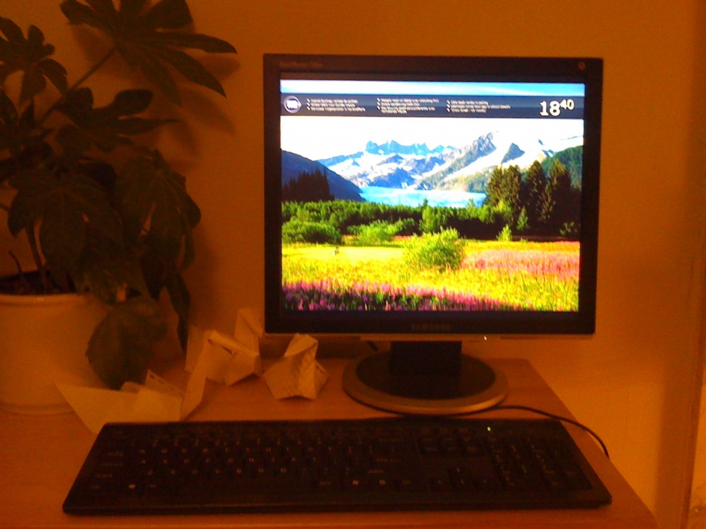
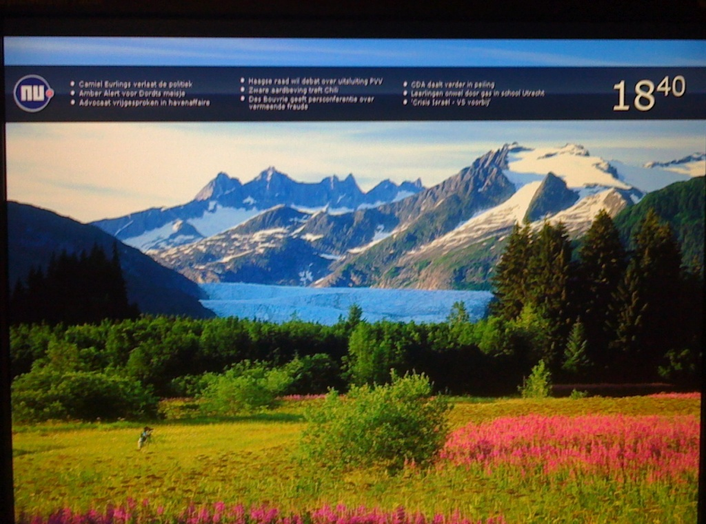
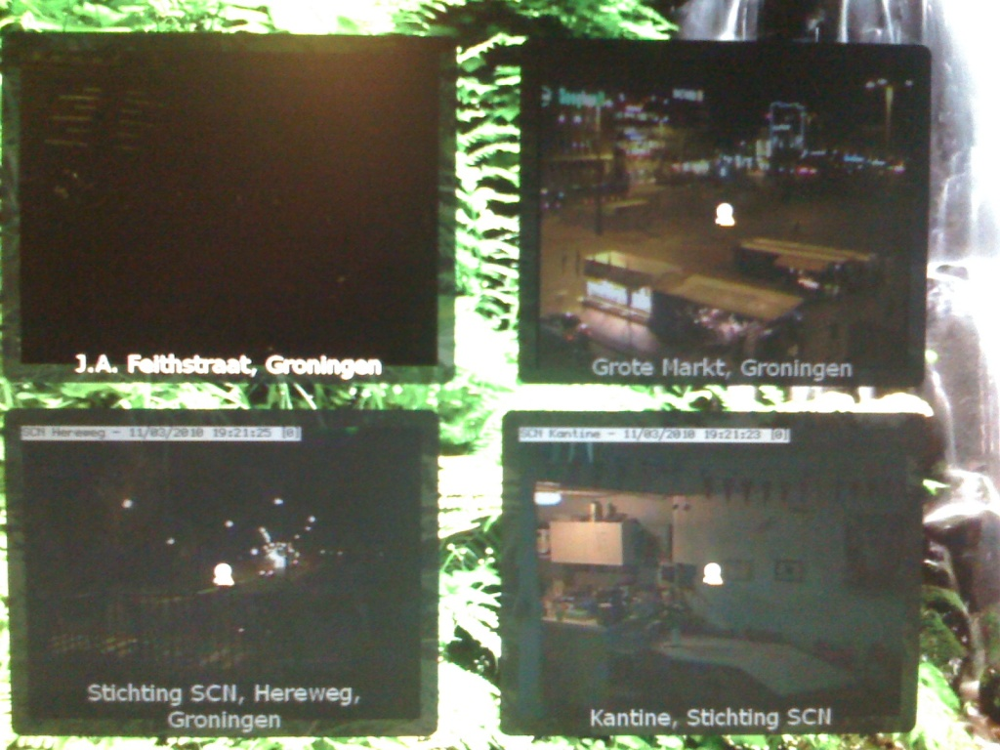
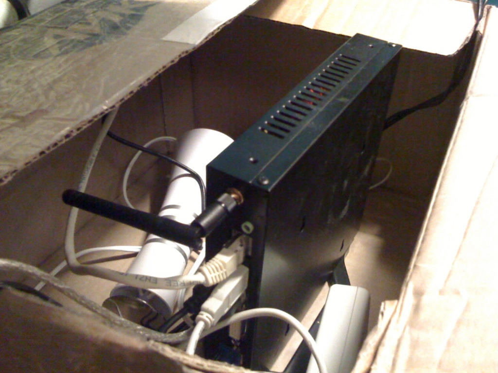
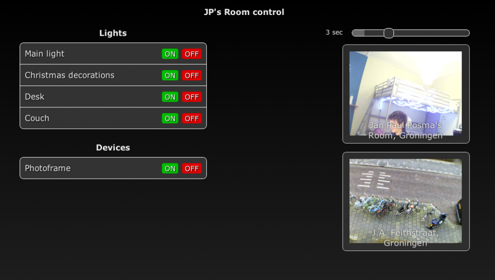
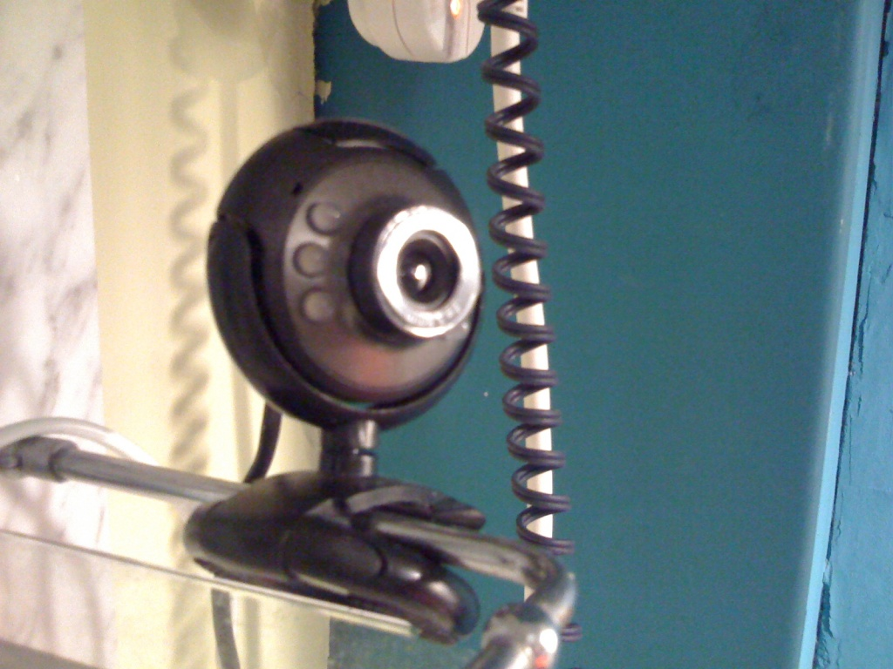
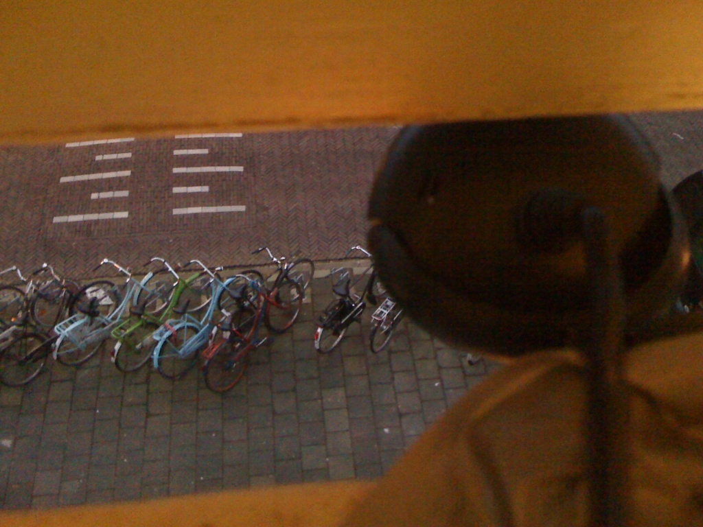

Simple home automation system
Built and written in ; edited in December 2015.
Last time I talked about my photoframe and room control setup. It was a laptop modification, and some hacking around in cheap remote controlled switches and simple scripts. I rebuilt most of the system now: a silent PC with normal screen serves the photos, it can control the lights and devices using a commercial product, there are cameras in the room and on the street, it’s all being shown and controlled by a slick webinterface, and my grandparents are quite happy with my old photoframe in their living room. :-)

Let’s get into details! The system is running on Aleutia T1, which is a really nice, silent PC-ish thing. PC-ish, because the performance is not really up to todays standards, but on the other hand it’s quite cheap, really silent and comes pre-installed with Ubuntu. Cool! (However, I installed Windows XP…) I got mine with a SSD, which means that there are no moving parts whatsoever, therefore it can stay on 24/7.
Using a simple XAMPP setup, it runs my photoframed software mentioned in the previous post.



The webcam setup is quite interesting. First I tried to plug the webcams using some USB extension cords. It was highly unstable, so now the PC is actually positioned in a cardboard box, lifted from the ground, so all the cables fit exactly.
Another issue with the webcams is having it stream, but also have it stream securely. A promising format seemed to be MJPEG: this is just like sending out JPEG frames as fast as the connection can manage. I run the following code to generate a MJPEG stream using VLC. The stream is only accessible from localhost for security reasons.
vlc.exe dshow:// :dshow-vdev="USB Video Device"
:dshow-adev=none :dshow-size=640x480 --no-sout-audio
--sout=#transcode{vcodec=mjpg, vb=512, fps=1, width=640, height=480}
:standard{
access=http{mime="multipart/x-mixed-replace; boundary=7b3cc56e5f51db803f790dad720ed50a"},
mux=mpjpeg, dst=127.0.0.1:8080/cam.mjpg
}
The boundary thing is a code required for modern browsers to correctly recognize the data type. If you remove the IP-address at the end, you’ll allow anyone to watch the stream. Now the next proxy is to make sure only authenticated people are able to see the stream. I tried this using a PHP script which simply read the stream and echo’ed it (and some other variants). I also tried using the Apache proxy module. But both options have the same problem: as I have a terrible internet connection, I really need the last frame. Once a frame is transmitted, the new frame must be the most recent frame possible. However, all options I tried seem to cache the data, so you’ll see 1 second of recording spread out on, like, half a minute on the client.
In the end I just went with a simple script I found online somewhere, that reads exactly one MJPEG frame and spits it out as ordinary JPEG:
$boundary="\n--";
$f = fopen($_GET['url'],"r");
if($f) {
while (substr_count($r,"Content-Length") != 2) $r.=fread($f,512);
$start = strpos($r,'Ø');
$end = strpos($r,$boundary,$start)-1;
$frame = substr("$r",$start,$end - $start);
header("Content-type: image/jpeg");
echo $frame;
}
fclose($f);
Now you have to refresh the image using for example Javascript, so that’s fine too. The webinterface I’ve written for this purpose also features a slider to set refresh interval, which is pretty handy if you’ve got a shitty connection like myself. Also, this brings me to the home automation part, which is actually pretty brief. All devices in my room are plugged into a KlikAanKlikUit unit, and the PC’s got a TPC-200 interface plugged in, and a little bit of software does the trick.
The TPC-200 interface comes with a DLL which has one single command: Send(id, value), with id being an integer and value a boolean. A simple executable wrapper, hacked together in Visual Basic, makes it easy to send commands from PHP, using exec.



The first room control breach has happened already: I used the inferior Apache Basic Authentication for the login procedure, and it turns out that sessions can keep open for a long period of time. Even when the server restarts during that time. I logged on the system on the laptop of a friend of mine, and 3 days later, he scared the crap out of me by playing with my lights. ;-)
Anyway, I quickly tracked him down using the access logs and we had a good laugh about it, but I still don’t trust the security anymore: the inside camera is pointed at the ceiling now… If you’re considering building the same setup, don’t plug in your nuclear power plant.